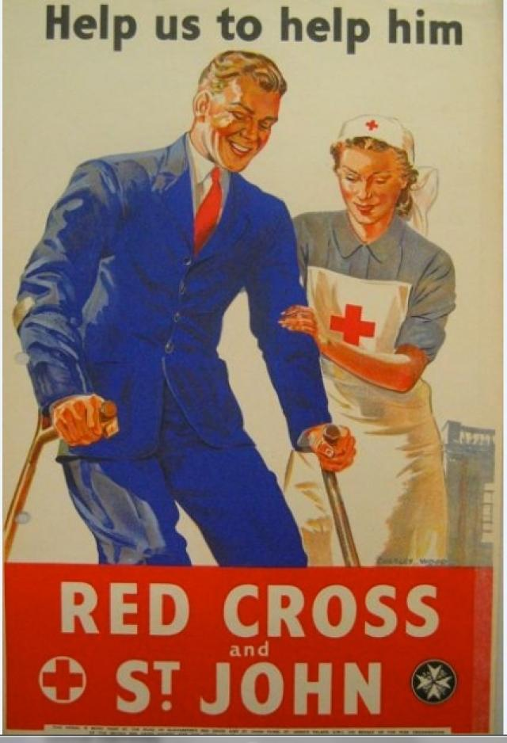

Ponto de Vista da SOFII
"A campanha de captação mais bem sucedida de todos os tempos". Um pedido poderoso, de fato, mas que sentimos ser merecido. Através de métodos pioneiros de captação de recursos, como coleta de doação porta a porta, pedidos de um centavo por semana, e popularização de bazares de caridade, a Cruz Vermelha do Duque de Gloucester e o Fundo Fundo St. John Appeal levantaram o equivalente a £ 7,7 bilhões. Além de captar essa quantidade extraordinária, eles também abriram o caminho para muitas das técnicas de captação de recursos que usamos hoje em dia.
Área de atuação: Benefício público e social
País de origem: Reino Unido
Público alvo: Doações planejadas
Meio de comunicação: Diversos
Nome do expositor : Louse Daintrey, Cruz Vermelha Britânica
Histórico:
A Cruz Vermelha do Duque de Gloucester e o Fundo St. John Appeal foram lançados em setembro de 1939 para arrecadar fundos para os afetados pela Segunda Guerra Mundial. Em 1946, o recurso aumentou para £54.324.408, tornando-se o maior fundo de caridade já criado no Reino Unido. O montante do fundo foi para as organizações britânicas Cruz Vermelha e Organização de Guerra St. John.
Características especiais:
O comitê do fundo decidiu executar apelos direcionados a determinadas seções da comunidade.
O fundo “um centavo por semana” foi um esquema criado com a cooperação do Congresso dos Sindicatos e da Organização dos Empregadores para angariar um centavo por semana dos trabalhadores, que era descontado do salário. O fundo arrecadou £ 17.663.225- tudo em moedas de um centavo. Seu sucesso foi creditado na idéia de coletar uma pequena quantidade de dinheiro de um grande número de pessoas. O montante não fazia uma diferença significativa no orçamento semanal do doador, mas os centavos somaram mais de um terço do recurso do fundo Duque de Gloucester inteiro. Este foi o precursor da doação descontada da folha de pagamento, como conhecemos hoje. Em 2011/12, £118 milhões foram doados através da doação na folha de pagamento no Reino Unido, apenas 34% do que o fundo de “um centavo por semana” coletou anualmente durante os anos de guerra.

As “coletas de porta a porta” foram organizadas em 23 bairros londrinos e precisaram de uma nova Lei do Parlamento, a Lei de Coleta de Doações de porta a porta, de março de 1940. A Lei exigia que os coletores tivessem que ser "pessoas adequadas", usavam crachás de identificação, possuíam um certificado de autoridade e tinham que colocar todo o dinheiro em uma lata coletora selada.
O fundo da ajuda da Sra.Churchill à Rússia foi lançado quando a guerra entre a Alemanha e a Rússia começou, em junho de 1941. O fundo arrecadou £ 7.984.000 e forneceu roupas, cobertores, suprimentos médicos e outros itens para a Cruz Vermelha Soviética. O fundo de ajuda à Rússia também pagou por maquinário para duas fábricas na Rússia produzirem membros artificiais do corpo humano.
Duzentos bazares de caridade permanentes e 150 temporários foram abertos para beneficiar o fundo.
Os estoques foram compostos inteiramente por itens doados. O fenômeno de uma cadeia de bazares de caridade entre 1939 e 1945 - antes de surgir a Oxfam - apontou o caminho para o crescimento maciço subsequente dos bazares nos anos seguintes. Estima-se que existem agora mais de 11.200 bazares de caridade no Reino Unido.
Numerosos eventos foram realizados em apoio à campanha, incluindo filmes, exposições, galas e concertos. Gracie Fields se apresentou em uma festa gala no Albert Hall em 1941 e Yehudi Menuhin deu um show em setembro de 1944.
Todas as seções da sociedade foram envolvidas na captação e um grande apoio foi prestado por escolas, igrejas e crianças. Os dentistas fizeram o seu papel fazendo doando dinheiro da venda dos tubos de pasta de dente usados para o fundo.
A campanha encerrou-se em 30 de junho de 1945, tendo levantado um total sem precedentes de £54.324.408.
A Cruz Vermelha Americana também fez um apelo e captou surpreendentes US$784 milhões do público americano. Desnecessário dizer que outras unidades da Cruz Vermelha realizaram campanhas similares durante a guerra.
Se levarmos em consideração que £4,3 bilhões foram prometidos internacionalmente para o tsunami asiático de 2004, fica claro que nenhuma campanha de mobilização de recursos foi tão bem sucedida quanto a da Cruz Vermelha do Duque de Gloucester e o Fundo St. John Appeal. O pedido permitiu que o povo britânico se unisse para ajudar diretamente os afetados pela Segunda Guerra Mundial. A generosidade do público é ainda mais notável à medida que o dinheiro foi arrecadado em um momento em que o país estava apertando seu cinto e "fazer e consertar" e racionamento eram a norma.
Até hoje os primeiro ministos britânicos
ajudam a Cruz Vermelha
Influência/Impacto:
A Cruz Vermelha do Duque de Gloucester e o Fundo St. John Appeal salvaram inúmeras vidas durante a Segunda Guerra Mundial e contribuíram com três quartos da renda da Organização da Cruz Vermelha e da Organização de Guerra de St. John.
A Organização de Guerra enviou encomendas de alimentos aos prisioneiros de guerra todas as semanas. No total, 19 milhões de encomendas foram enviadas para 180 mil pessoas. A Organização de Guerra realizou inúmeras outras atividades para ajudar as pessoas afetadas pela guerra, incluindo um serviço de mensagens, criação de hospitais e casas de convalescença, providenciando ambulâncias e transportando bens e equipamentos.
"Todo mundo foi unânime em sinceros agradecimentos à Cruz Vermelha, cujos pacotes de comida e roupa fazem a diferença entre a vida e a morte...a Cruz Vermelha praticamente os salvou da fome". The Times, março de 1943.
"Como posso expressar o que sinto sobre a Cruz Vermelha? Como uma estrela brilhante na escuridão da nossa noite, sabemos que a Cruz Vermelha estava lá e que nos alcançaria se pudesse e, finalmente, agradeço Deus, ela nos alcançou.” Coronel Mary Booth, neta do fundador do Exército da Salvação, tendo recentemente retornado depois de dois anos e meio nos campos de prisão e internamento alemães, em junho de 1943.
No final da guerra, os trabalhadores da Cruz Vermelha criaram serviços médicos e de reabilitação para os libertos dos campos de concentração.
"Eu cheguei cheio de admiração por nossas equipes da Cruz Vermelha que estão lutando tão bravamente através do trabalho sombrio que lhes foi pedido para realizar aqui". O correspondente do The Times Red Cross no campo de concentração de Belsen, maio de 1945.
Méritos:
A Cruz Vermelha do Duque de Gloucester e o Fundo St John Appeal são o maior fundo de caridade da história da captação de recursos britânicos, arrecadando o equivalente a £7,7 bilhões. A campanha levou a muitas inovações em captação de recursos, incluindo legislação para permitir coletas de casa-em-casa e a popularização de bazares de caridade e permitiu ao público expressar sua solidariedade com pessoas cujas vidas foram afetadas pela guerra.
Para ler o caso diretamente no site da SOFII, clique aqui.